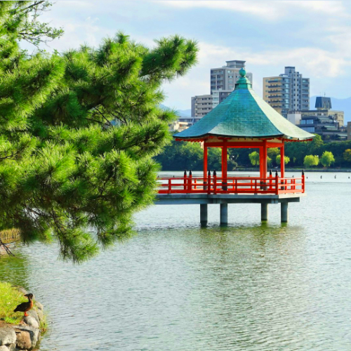

Ohori Park – A Serene Escape in the Heart of Fukuoka

Ohori Park (大濠公園) is a stunning urban park located in the center of Fukuoka City. Famous for its large pond surrounded by lush greenery and walking paths, it offers a peaceful escape for locals and tourists alike. Whether you are strolling around the lake, enjoying the traditional Japanese garden, or relaxing in one of the many tea houses, Ohori Park is a perfect place to unwind and enjoy nature in the heart of the city.
The Heart of Fukuoka's Green Space
Ohori Park is designed with a central pond, complete with walking paths and bridges that connect different sections of the park. Visitors can rent a boat, visit the Japanese Garden, or simply enjoy the tranquil environment that makes this park a favorite destination.
Best Time to Visit
The park is beautiful year-round, but it is particularly stunning during cherry blossom season in spring and autumn when the fall colors are in full bloom. It is a great spot for photography and a peaceful retreat from the city.
How to Get to Ohori Park
- 🌸 From Hakata Station: Take the Kuko Line to Ohori Koen Station (approx. 10 minutes)
- 🌸 Walking distance from Ohori Koen Station to the park entrance
- 🌸 Opening hours: Open year-round, ideal to visit early morning or late afternoon
- 🌸 Best photo spots: The pond, Japanese Garden, and Sakura-lined paths in spring
Why Ohori Park is a Must-Visit in Fukuoka
Ohori Park offers a peaceful retreat in the middle of the city. Whether you're interested in nature, photography, or just looking for a place to relax, this park is an ideal stop to rejuvenate during your Fukuoka visit.
Tags: Ohori Park, Fukuoka attractions, Japan parks, Japanese gardens, Fukuoka nature, relaxing places in Fukuoka
Planning to visit Ohori Park?
To get the most immersive and insightful experience, we recommend booking a certified local private guide from our team. All our guides are licensed professionals officially recognized by the Japanese government, offering personalized tours tailored to your interests. Please contact your selected guide in advance to confirm availability and get expert assistance for your trip.